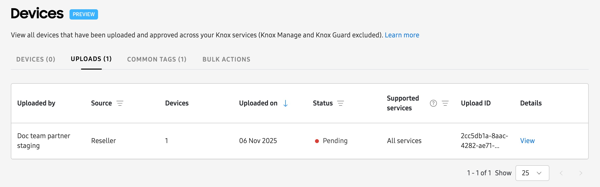
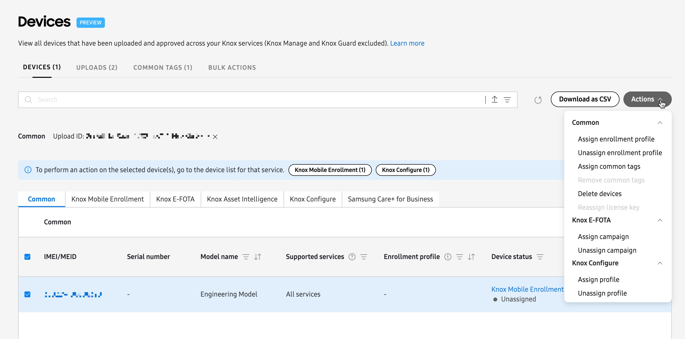
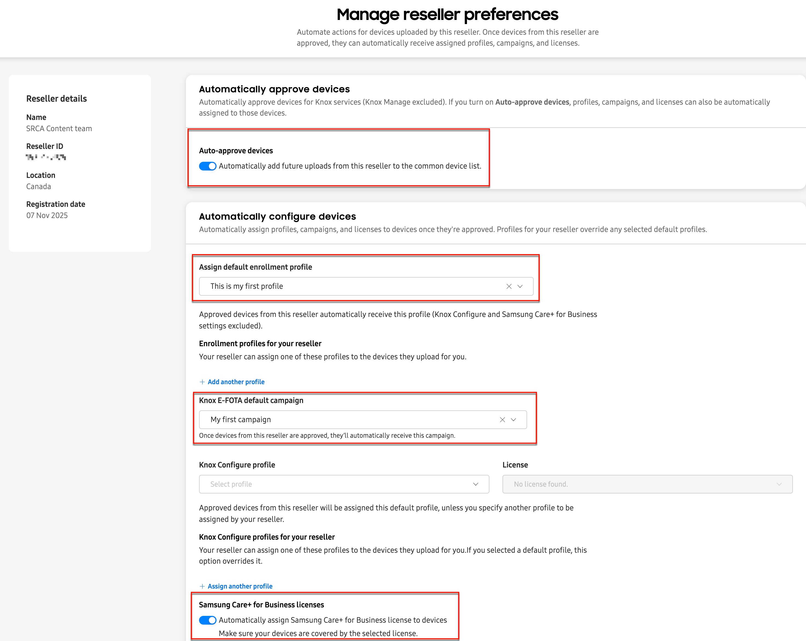
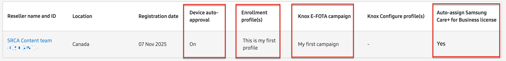

Register devices to your Knox cloud services
Last updated November 19th, 2025
Whenever you purchase devices from an approved Knox reseller, the reseller will upload your new device IMEIs directly to the UPLOADS tab on the Knox Admin Portal’s Devices page. From here, you can approve the upload for all services using a single action, instead of having to approve uploads for each service individually.

Once devices are approved, they appear in the DEVICES tab where you can quickly perform device-related actions, like assigning an enrollment profile, Knox Configure profile, or Knox E-FOTA campaign.

If you want to perform specific device actions from within a Knox service console, for example requesting diagnostic logs in Knox Asset Intelligence or forcing a client refresh in Knox E-FOTA, then you must register your newly approved devices into each console’s device list. The process for doing this differs slightly for each service, and is described in the following sections.
Manually register devices
You can register your reseller-uploaded devices into each Knox cloud service by manually performing a device action specific to that service. The following table describes the actions required to register the devices into each service:
| Knox cloud service | Steps to manually register devices |
|---|---|
| Knox Mobile Enrollment | No action is required. Your devices are automatically registered to the service after you approve the upload. |
| Knox E-FOTA | Either assign a campaign or an enrollment profile with Knox E-FOTA selected as a service. Once the enrollment profile is assigned, the device appears in the Knox E-FOTA console’s Devices page. |
| Knox Asset Intelligence | Assign an enrollment profile with Knox Asset Intelligence selected as a service. Once the enrollment profile is assigned, the device appears in the Knox Asset Intelligence console’s Devices page. |
| Knox Configure | No action required. Your devices are automatically registered to the service after you approve the upload. |
| Samsung Care+ for Business | Assign a valid Samsung Care+ for Business license to the device using BULK ACTIONS. Once the license is assigned, the device appears in the Samsung Care+ for Business console’s Devices page. |
Configure reseller preferences to automatically register devices
You can configure reseller preferences in the Knox Admin Portal to automatically register all future uploaded devices to the respective Knox service consoles. To do this:
-
Go to the Resellers page in the left navigation pane, then click the reseller’s name in the table.
-
On the Manage reseller preferences page, toggle on the Auto-approve devices option.
-
In the Automatically configure devices area, configure the following fields for your services:
-
For Knox Asset Intelligence and Knox E-FOTA: In the Assign default enrollment profile field, select an enrollment profile that includes both services.
-
For Knox E-FOTA only: Assign a default campaign in the Knox E-FOTA default campaign field.
-
For Samsung Care+ for Business: Toggle on the Automatically assign Samsung Care+ for Business license option, then select the available license from the list.

-
-
Click Save. You can review your reseller’s auto approval and auto registration options in the Resellers table.

The next time your reseller uploads new devices to your account, your devices are automatically approved and registered to your Knox cloud services.
Re-register devices
If a device is registered to multiple Knox cloud services and you delete it from one Knox cloud service, you can recover the deleted device and re-register it back into the service from the Knox Admin Portal’s Devices page. For example, if you had a device in Knox Asset Intelligence, Knox Mobile Enrollment, and Knox E-FOTA, but you deleted it from Knox E-FOTA, you can re-register it back into Knox E-FOTA.
You can only re-register devices if they are deleted from a Knox service console. If you delete devices from the common device list in the Knox Admin Portal, then they are also automatically deleted from all Knox cloud services (except for Knox Manage1 and Knox Guard2).
Once devices are deleted from all services, you must contact your reseller to re-upload them back into your account.
To re-register a device into a service after it’s been deleted:
- Go to the Knox Admin Portal’s Devices page.
- Select a device that you want to re-register back into a service.
- Click Actions, then select a service-specific action for the device:
- To re-register a device that was deleted from Knox Mobile Enrollment, click Assign enrollment profile. The enrollment profile can include any service.
- To re-register a device that was deleted from Knox E-FOTA, click Assign enrollment profile with Knox E-FOTA as a service, or Assign campaign.
- To re-register a device that was deleted from Knox Asset Intelligence, click Assign enrollment profile with Knox Asset Intelligence as a service.
- To re-register a device that was deleted from Knox Configure, click Assign profile.
- To re-register a device that was deleted from Samsung Care+ for Business, simply assign a license to the device again.
Alternatively, you can re-register devices back into Knox E-FOTA, Knox Asset Intelligence, and Samsung Care+ for Business through a CSV file.
Re-register devices into Knox Guard
Consider the following scenarios if you have devices added to multiple Knox cloud services, including Knox Guard.
Device is deleted from other services, but not Knox Guard
If you delete a device from Knox Mobile Enrollment, Knox E-FOTA, Knox Asset Intelligence, Knox Configure, or Samsung Care+ for Business, but the device remains in Knox Guard, then you can re-register the deleted devices back into those services by performing any service-specific action from the Knox Admin Portal’s Devices page. These actions are described above in Re-register devices.
Device is deleted from Knox Guard, but not other services
If you delete a device from the Knox Guard console, but the device remains active in your other Knox cloud services, then you have two options to re-register the device back into Knox Guard:
-
Re-upload the device into Knox Guard by using a CSV file upload.
-
Delete your device from the Knox Admin Portal, then ask your reseller to re-upload the deleted device back into your Knox account. To do this:
- Go to the Knox Admin Portal’s Devices page.
- Select the device IMEI that you want to delete and re-upload, then click Actions > Delete devices.
- On the Delete device dialog, you can provide an optional reason for deletion, then click DELETE.
- After ensuring that the device is deleted from all services including Knox Guard, contact your reseller to re-upload it back into your account.
- Once the device is re-uploaded by the reseller, it appears in your Knox Guard console. Repeat the steps to register the device back into your Knox cloud service consoles.
- 1: Knox Manage devices can only be deleted from the Knox Manage new or original consoles. Before deleting, you must first unenroll the devices. See the Knox Manage documentation for more details.
- 2: Knox Guard devices can only be deleted from the Knox Guard console. Before deleting, you must first take appropriate actions to complete device management, which makes the devices ready for deletion. See the Knox Guard documentation for more details.
On this page
Is this page helpful?